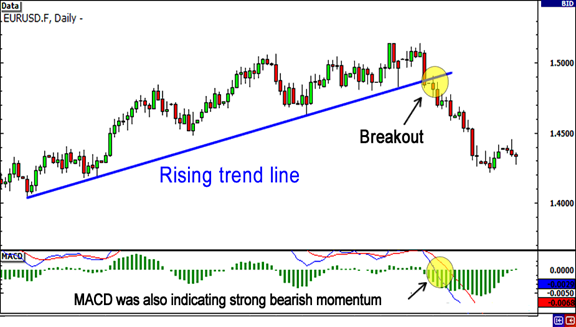
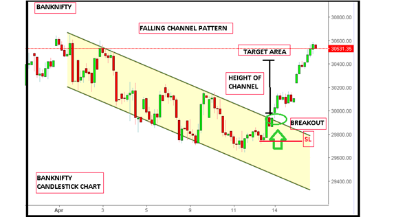
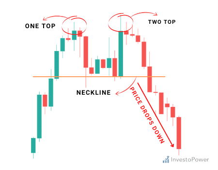
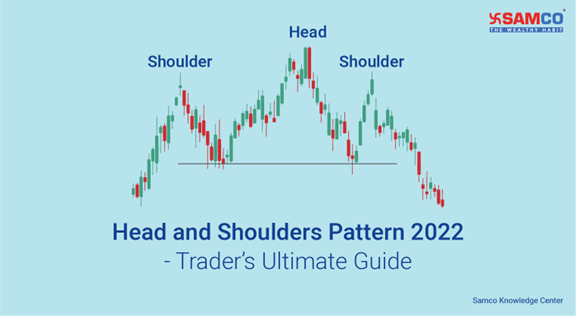

Probability Enhancers
Breakout Strategy
1. If the Price halts before the breakout/breakdown candle. -Probability Enhancer
2. If the Price is reacting from Higher Time-frame Demand Zone then it will be a best breakout trade and if the price is reacting from Higher Time-frame Supply Zone then it will be a best breakdown trade. -Probability Enhancer
3. If the volume increased in the breakout/breakdown candle is more as compared to many previous candle's volume. Probability Enhancer
2. If the Price is reacting from Higher Time-frame Demand Zone then it will be a best breakout trade and if the price is reacting from Higher Time-frame Supply Zone then it will be a best breakdown trade. -Probability Enhancer
3. If the volume increased in the breakout/breakdown candle is more as compared to many previous candle's volume. Probability Enhancer

Trendline
1.. If the Slope of Trendline is almost 45°, then breakout/breakdown will be powerful. -Probability Enhancer
2. Trendline that has been tested more times can give a powerful breakout/breakdown -Probability Enhancer
3. Trendline to which price respects and does not move out of it anywhere in between can give powerful breakout/breakdown. Probability Enhancer
4. Trendline drawn connecting latest pivots. Probability Enhancer
2. Trendline that has been tested more times can give a powerful breakout/breakdown -Probability Enhancer
3. Trendline to which price respects and does not move out of it anywhere in between can give powerful breakout/breakdown. Probability Enhancer
4. Trendline drawn connecting latest pivots. Probability Enhancer
google ads
Triangle Pattern
1.If price gives breakout/breakdown exactly between 66-75% range of a triangle pattern can give better results. -Rule
2. There should be proper fight between buyers and sellers in the range of Triangle then it can give the better result on breakout/breakdown. (Fight means that it the price is first reacting from Support line then next it should react from Resistance line and vice versa). -Rule
3. Longer the price is intact between the Triangle pattern & more often it is successfully tested, the more important and reliable it becomes. - Probability Enhancer
4. Target should be before the measuring ing technique technique of of Triangle Triangle Pattern. -Rule
2. There should be proper fight between buyers and sellers in the range of Triangle then it can give the better result on breakout/breakdown. (Fight means that it the price is first reacting from Support line then next it should react from Resistance line and vice versa). -Rule
3. Longer the price is intact between the Triangle pattern & more often it is successfully tested, the more important and reliable it becomes. - Probability Enhancer
4. Target should be before the measuring ing technique technique of of Triangle Triangle Pattern. -Rule
google ads
Channel Pattern
1. There should be proper fight between buyers and sellers between 2 parallel lines then it can give the better result on breakout/breakdown. -Rule
2. Longer the price is intact between 2 parallel lines & more often it is successfully tested, the more important and reliable it becomes. Probability Enhancer
3. Channel to which price respects and does not move out of it anywhere in between can give powerful breakout/breakdown. Probability Enhancer
2. Longer the price is intact between 2 parallel lines & more often it is successfully tested, the more important and reliable it becomes. Probability Enhancer
3. Channel to which price respects and does not move out of it anywhere in between can give powerful breakout/breakdown. Probability Enhancer

google ads
Double Top/Bottom Pattern
1. Double Top or Bottom is almost at a same point. It should look like a straight line. -Probability Enhancer
2. Distance between the Support and Resistance lines Should not be too much. Probability Enhancer
2. Distance between the Support and Resistance lines Should not be too much. Probability Enhancer

google ads
Triple Top/Bottom Pattern
1. Triple Top or Bottom is almost at a same point. It should look like a straight line. -Probability Enhancer
2. . Support line in Triple Top and Resistance line in Triple Bottom should also be almost at a same point. It should look like a straight line. Probability Enhancer
2. Distance between the Support and Resistance lines Should not be too much. -Probability Enhancer
2. . Support line in Triple Top and Resistance line in Triple Bottom should also be almost at a same point. It should look like a straight line. Probability Enhancer
2. Distance between the Support and Resistance lines Should not be too much. -Probability Enhancer
google ads
Head & Shoulder
1. . Target should be before the measuring technique of Head and Shoulder or Inverse Head and Shoulder Pattern. -Rule

google ads